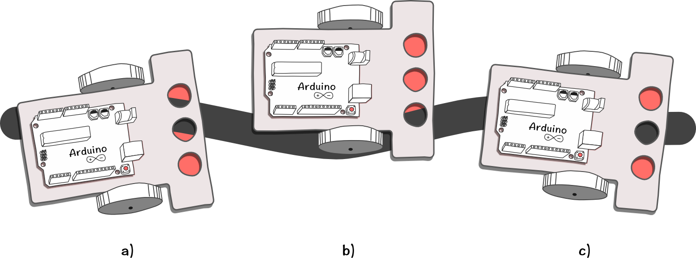
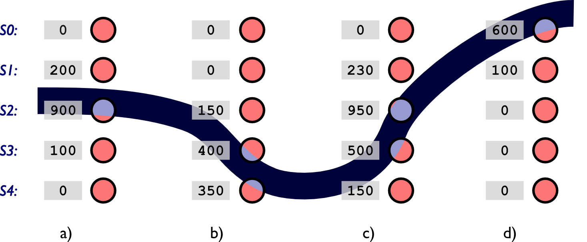

Gewichteter Mittelwert (Massenschwerpunkt) für mehreren Bodensensoren
Soll ein Roboter mit nur einem Sensor einer Linien folgen, so lässt sich das nur mit einem Trick realisieren: Der Roboter folgt der Linienkante und nicht der eigentlichten Linie. Stehen aber zwei oder mehr Bodensensoren zur Verfügung, ist es möglich der Linienmitte zu folgen. Außerdem ist es damit möglich Kreuzungen und Verzweigungen zu erkennen oder auf einem gezeichnetten Gitter zu navigieren.
Gewichteter Mittelwert
Bevor verschiedene Algorithmen zum Linienfolgen untersucht werden, ist es notwendig aus den Messerwerten der einzelnen Bodensensoren, einen einzelnen Wert zu berechnen, welcher angibt, wo sich der Roboter in Bezug zur Linie befindet. Dies wird wie bei der Bestimmung des Massenschwerpunkts auf einem Stab mit dem gewichteten Mittelwert gemacht.
Hierbei wird jeder Sensorwert \(S_0\), \(S_1\), ... mit einem Gewichtungsfaktor \(w_0\), \(w_1\), ... multipliziert und anschließend durch die Summe der einzelnen Sensorwert dividiert.
$$ P = \frac{w_0\cdot S_0 + w_1\cdot S_1 + w_2 \cdot S_2 +\cdots}{S_0 + S_1 + S_2 + \cdots} $$
Die Gewichtungsfaktoren \(w_0\), \(w_1\) usw. können in gewisser Weise als geometrische Position der einzelnen Sensoren interpretiert werden (ach wenn die Werte nicht den wirklichen Sensorabständen entsprechen müssen). Dies führt dazu, dass das Ergebnis \(P\) angibt an welcher Stelle der Sensoren sich die Linie befindet.
Zumo32u4
Beim Zumo 32u4 wurden als Gewichtungsfaktoren die Werte \(w_0=0\), \(w_1=1000\), \(w_2=2000\), usw. gewählt. In der Konfiguration für nur 3 Bodensensoren ergibt sich somit folgende Gleichung zur Bestimmung der Linienposition: $$ P _3= \frac{0\cdot S_0 + 1000\cdot S_1 + 2000 \cdot S_2}{S_0 + S_1 + S_2 } $$
In der folgenden Abbildung ist exemplarisch dargestellt, welche Werte der gewichtete Mittelwert bei entsprechender Position der Sensoren über der Linie annehmen wird.

In der Zumo-Bibliothek bestimmt der Befehl int readLine() die relative Linienposition nach dem beschriebenen Verfahren des gewichteten Mittelwertes.
Aufgaben
- Berechnen Sie für den Zumo-Roboter mit fünf Bodensensoren den gewichteten Mittelwert \(P_5\) für die in der Abbildung dargestellten Sensorwerte. Verwenden Sie die oben genannten Gewichtungsfaktoren des Zumo 32u4.
- Bei welchem Wert für \(P_5\) befindet sich die Linie genau unter dem Sensor S2?
- Wo kann sich die Linie befinden, wenn das Ergebnis \(P_5=0\) ist?
- Wo kann sich die Linie befinden, wenn das Ergebnis \(P_5=4000\) ist?

Übetragen Sie das Beispielprogramm für die Liniensensoren auf ihren Zumo. Das Programm gibt über den gewichteten Mittelwert die Linienposition als Wert zwischen 0 und 4000 (2000 genau über der Linie) auf dem Display aus.
Analysieren Sie, welche Werte für welchen Versatz ausgegeben werden und vergleichen Sie diese mit den Aufgaben 1. bis 4. Welchen Einfluss hat die Linienbreite auf das Ergebnis?